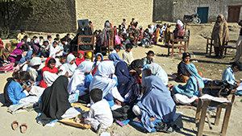

Member blog: An answer in Pakistan to ‘what is open data for?’
 The Millennium Development Goals, agreed at the United Nations Millennium Summit in 2000, have as their second objective that – by 2015 – all children will have universal access to primary education.
In the year 2000, some 100 million children globally were not in school. We're a year away from the target.
Pakistan, by all accounts, has failed to achieve the goal.
A UNESCO fact-sheet presents the problem. 1 in 12 of out-of-school children, 5.1 million, live in Pakistan. Literacy rates in Pakistan are stagnant at 58% of the population, with only 50% of the rural population ever attending school. Two-thirds of those out-of-school are girls. Primary net enrolment has risen from 58% to 74%, but this hides tremendous variation. Only 17% of people have ever been to school in Punjab while 37% have attended in Balochistan.
And even these statistics hide tremendous variation in reporting. Some estimates put out-of-school children at 10 million in Pakistan.
Clearly, then, a concerted effort is required to ensure that the best approaches to improving education outcomes are recognised and used to improve results elsewhere in Pakistan.
Alif Ailaan, an education research and advocacy organisation in Pakistan, has been working with HTSPE, an international social and economic development consultancy, and funded by DFID, to build a convincing set of case studies and research to drive education improvement.
One way they have begun to do this is to open up research studies looking at Pakistan's education system and present that in a user-friendly fashion. Whythawk has been supporting the project. Our work includes building extensions to the CKAN open data publishing platform to allow data-driven dashboards for online advocacy. I've just returned from a week in Islamabad with the enthusiastic professionals driving the Pakistan Education Portal training them on how to use the portal.
Their drive is clear: work with existing research institutes and programs to release their data so that other researchers can perform meta-studies, develop new and useful insight, and so drive meaningful change.
It is a useful and timely answer to the question: why should I release my data?
The term "open data" has become somewhat loaded, but – to simplify – means that data are accessible without limitation in some standardised and machine-readable form.
Organisations which intend to aggregate, reflect, and present analysis on published data from different sources should not be confronted with a tsunami of licence conditions in order to do so. National statistical data which demands that "An electronic copy of all reports and publications based on the requested data will be sent to the National Data Archive," for instance, places a massive burden on future users of that data.
It must be recognised, though, that releasing and maintaining such data is a perpetual and costly business. Many national governments have signed up, but implementation lags.
Tim Berners-Lee has spoken eloquently about the benefits of "raw data" and why governments should release it. "The information about spending, agriculture, health and education that lies behind locked databases could be used to dramatically improve people's lives. When governments begin to release data openly on the web, the growing movement of hackers and activists and even internal government agencies and corporations, can begin to use the previously unconnected and undissected numbers, images and graphs to create new ways for you to access valuable new information."
While there are stories of open data being used, far too many are mundane. Many, such as maps to the nearest toilet, or where you can walk your dog, are hardly reasons for governments to pay attention. Numerous public and commercial services already provide such information.
The few stories that are compelling, however, are very compelling.
The Southern African Regional Programme on Access to Medicines and Diagnostics, for example, used open access to medicine pricing to develop a regional study. They found some governments were being charged up to 25 times more for the same drugs. A similar exercise in the UK looking at which statins, a commonly-used cholesterol-lowering drug, were being prescribed by doctors, indicated that simply changing to generics could save the fiscus £70 million a year, or enough to employ 2,000 nurses.
And then there's our work at Whythawk, supporting the team at Alif Ailaan in Pakistan. I believe that, after their service goes live in June, and as their data are consolidated, new insights will drive better outcomes for youngsters there.
These are big projects, and the world is still filled with major challenges which can only be resolved through institutional funding and major professional effort. Supporting farmers in rural African villages to adapt their crops for climate change. Improving healthcare outcomes. Education. Many of these are being driven by opportunities for open access research publication.
However, it is also true that the open data industry will only reach maturity when thousands of enterprises are able to build profitable businesses from a reliable source of open access and public data.
Obviously, consulting services like Whythawk are part of that commercial impetus for open data. But neither is this a movement limited exclusively to the developed nations.
Linet Kwamboka, a founder at DataScience in Kenya, is in the business of aggregating open data from various sources while creating relationships across sectors to mainly help businesses and investors understand where opportunities and great returns are. She explains the business advantage as, "If as an investor you wanted to invest in flower farming in Kenya for example, do you do it in Nakuru county because that is where everyone is doing it or is there another county in Kenya that has more favourable climate, manpower and proximity for the activity? We help you make the right decision with lower risk."
This is a fantastic start and I wish her every success. Importantly, the more initiatives like this, along with the big global development initiatives, the better the case for open data becomes.
Five years after Tim Berners-Lee got a roomful of people to chant "raw data now" at TED, we are finally building up good reasons why data owners should listen.
Gavin Chait is Lead Consultant at Whythawk, an ODI supporter.